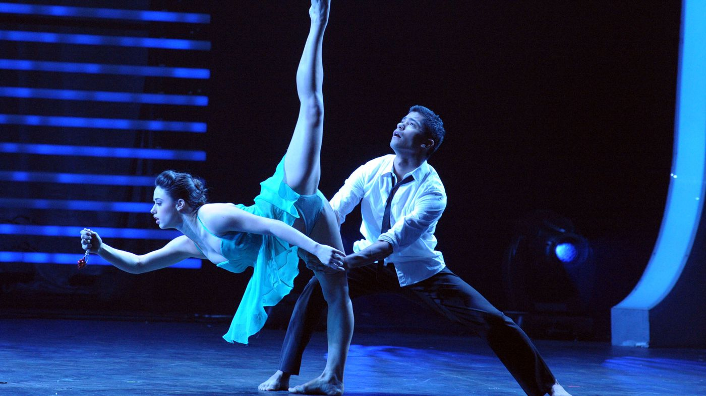

MODERN DANCE
What Is Modern Dance?
Modern dance is a highly expressive style of dance that challenges the structured dance technique of classical ballet. The focus of modern dance is expression, rather than following a rigid set of postures or technical positions that ballet dancers are trained in. Modern dance movements are considered freeform and fluid, and are often inspired by other dance styles—like African dance, ballet, and folk dance. Though modern dance technique is considered more relaxed and natural than ballet, it can require considerable core work and strength. Modern dancers often perform barefoot, in tight costumes that showcase the shapes of their bodies.
A Brief History of Modern Dance
By the end of the nineteenth century, modern dance emerged as a new performing art that rebelled against the tight structure of traditional ballet. In the late 1800s and early 1900s, dancers Isadora Duncan and Loie Fuller popularized the dance form as a new style of artistry and entertainment with their lyrical, emotional performances.
Other modern dance pioneers include Ruth St. Denis and Ted Shawn, who founded the Denishawn School of Dancing and Related Arts in 1915 in Los Angeles. The Denishawn School trained the next generation of modern dancers such as Martha Graham, Charles Weidman, and Doris Humphrey, who took the Denishawn techniques and turned them into today’s American modern dance.
By the mid-twentieth century, modern dance became a popular form of dance that would spawn other styles of modern movement such as lyrical dance and contemporary dance, as well as birth a legacy of legendary performers—like Alvin Ailey, Katherine Dunham, and Twyla Tharp. Today, dance schools around the world offer modern dance classes to people of all ages.
What Classifies a Routine as Modern Dance?
Some recognizable traits of modern dance include:
Freeform and improvisational. Modern dance is often described as fluid and freeform, alternating between long, languid movements, and jerky ones that show the contraction and expansion of the body. Some dancers create their own unique moves for routines or even use improvisation during their performances.
It’s emotional. Modern dance expresses the emotion that the music evokes in the dances. Dancers essentially perform their feelings to music, conveying a raw or impassioned display.
It rejects convention. Rather than striving for the weightlessness and grace of ballet, modern dancers use their body weight to propel themselves across the floor, often falling, tumbling, or rolling to express rhythm.